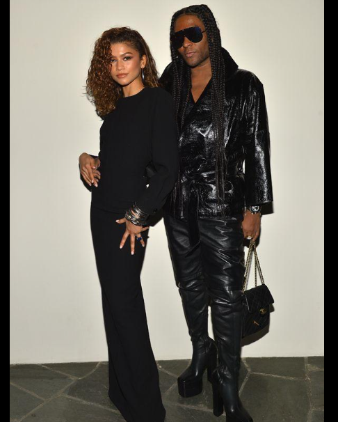
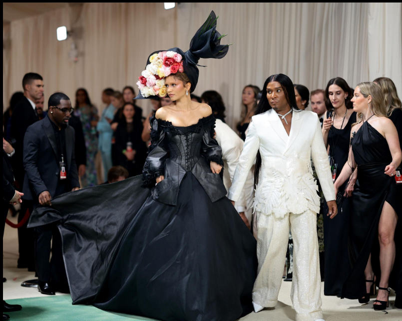
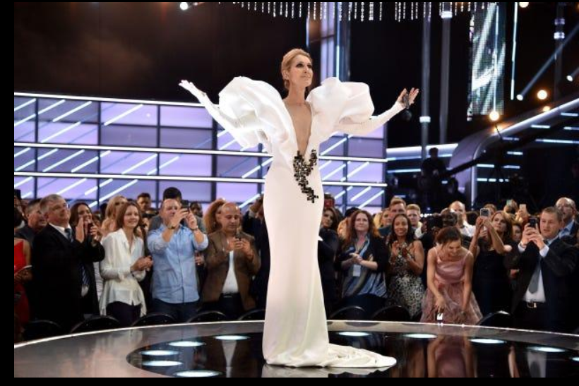
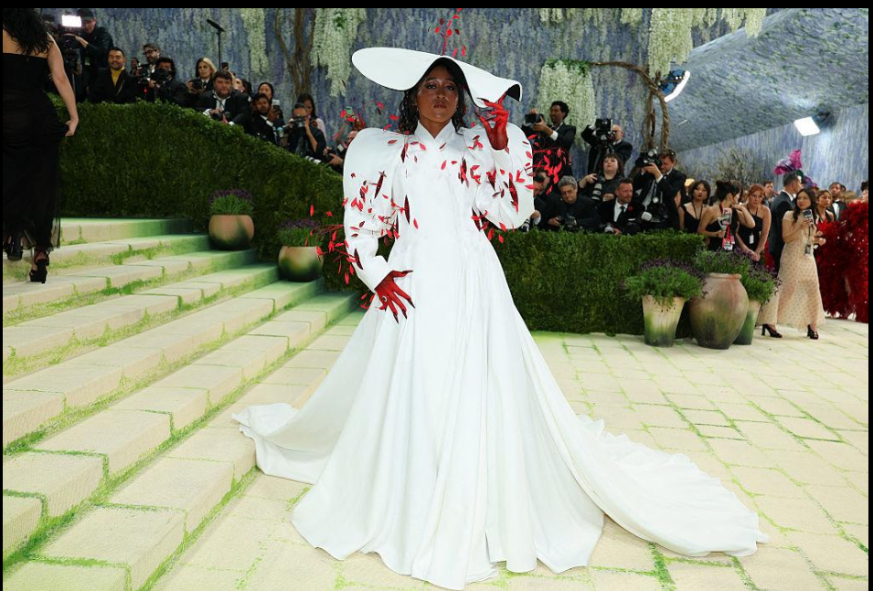

Fashion has always been more than clothing. The right outfit can introduce a personality, revive a forgotten era, create a character, or turn an ordinary appearance into something people remember for years. Few people have understood this better than Law Roach.
Known for his dramatic styling and his ability to create unforgettable celebrity images, Roach has become one of the most influential figures in modern fashion. But his journey did not begin with couture houses, celebrity dressing rooms, or red carpets.
His career developed gradually, through an unusual eye for vintage clothing, a willingness to experiment, and a belief that fashion should have a point of view.
From Vintage Finds to the Fashion World
Before Law Roach became a familiar face at fashion events, he was fascinated by clothing from another time.
His early career was connected to vintage fashion. He developed an instinct for finding pieces that were unusual, distinctive, and capable of giving someone a completely different identity.
This experience became important later because Roach learned to look at clothes not simply as individual garments, but as pieces of a much larger visual story.

His breakthrough relationship came when he began working with a young Zendaya. At the time, she was still establishing herself in the entertainment industry.
What followed was a creative partnership that would eventually become one of the most recognizable collaborations in celebrity fashion.
Rather than dressing Zendaya according to what was considered conventionally glamorous, Roach allowed her to experiment. Their early appearances already showed a willingness to take risks, and that approach gradually became their signature.
Building Zendaya's Fashion Identity
The evolution of Zendaya's style is perhaps the clearest example of Law Roach's talent.
Instead of giving her a collection of unrelated fashionable outfits, Roach helped create a visual identity that could change depending on the occasion.
One appearance could feel youthful and playful, while another could look sophisticated, futuristic, historical, or theatrical.
Their red-carpet collaborations became increasingly ambitious.

At the Met Gala, for example, fashion became part of the performance. The clothes were not merely selected because they looked good in photographs. They often contained references, characters, eras, or ideas.
This became particularly noticeable as Zendaya's career grew.
For Dune: Part Two, her futuristic Mugler ensemble felt connected to the film's world. During the Challengers promotional tour, tennis became an important visual theme, appearing in different forms throughout her wardrobe.
This approach changed how many people viewed promotional dressing. A press tour could become a continuous fashion narrative rather than a series of disconnected red-carpet appearances.
When Celine Dion Became a Fashion Conversation
Another major chapter in Roach's career came through his work with Celine Dion.
Dion already had an enormous career and a distinctive public image. Roach did not need to introduce her to the world. Instead, he helped reveal another side of her personality.

Her wardrobe began to feel more adventurous and contemporary. Unexpected streetwear, oversized silhouettes, dramatic couture and playful references appeared alongside more traditional glamorous looks.
One particularly memorable example was Dion wearing a sweatshirt referencing Titanic, the film associated so strongly with her legendary song My Heart Will Go On.
The cleverness was in the connection. It was not simply a fashionable sweatshirt. It was a piece that made people think about Dion's own history.
That is one of Roach's strengths: he understands that the most interesting fashion often has a second layer.
Fashion as Character Building
What makes Law Roach different from a stylist who simply assembles attractive outfits is his understanding of character.
When a celebrity walks onto a red carpet, millions of people see the final photograph. Roach appears to think about what that photograph should communicate.
Is the person supposed to look powerful?
Mysterious?
Playful?
Futuristic?
Nostalgic?
Unexpected?
The clothing becomes a way of answering those questions.
This is why his work is often closer to costume design or visual storytelling than ordinary wardrobe selection.
A successful Law Roach look can contain references to cinema, music, sports, fashion history and popular culture. The result is something audiences can interpret rather than simply admire.

The Retirement Announcement That Shocked Fashion
One of the biggest surprises in Roach's career came in 2023, when he announced his retirement from styling.
Considering how influential he had become, the announcement immediately attracted enormous attention. For someone who had spent years creating some of the world's most discussed celebrity looks, stepping away from styling seemed almost unbelievable.
But Roach's career did not simply disappear.
Instead, his work continued to evolve. His creative influence became broader, and his approach began moving beyond the traditional Hollywood red carpet.
In many ways, the episode showed something important about his career: Roach was never interested in being defined by a single job title.
From Red Carpets to the Tennis Court
One of the most interesting developments in Roach's more recent work has been his involvement in sports fashion.
His work with Naomi Osaka shows how his storytelling approach can exist outside Hollywood.
Athletes today are increasingly becoming fashion personalities, and Roach's approach fits naturally into that world.
An athlete's outfit can communicate heritage, confidence, individuality and cultural references before the match even begins.
This is another interesting turn in Roach's career. He started by finding stories in vintage clothing, became one of Hollywood's most recognizable stylists, and eventually began applying the same storytelling instincts to athletes.
The setting changed, but the philosophy remained remarkably similar.
The Looks That Defined His Career
It is difficult to choose only a handful of Law Roach's most memorable creations because his work covers such a wide range of styles. However, several moments demonstrate how his career developed.
Zendaya's Cinderella-inspired Met Gala appearance showed how technology and fashion could work together to create a theatrical moment.
Celine Dion's playful Titanic-referencing look demonstrated how personal history could become part of celebrity fashion.
Zendaya's futuristic Mugler look for Dune: Part Two showed how closely fashion could connect with cinema.
The tennis-inspired wardrobe during the Challengers campaign demonstrated the power of creating an entire visual theme rather than relying on one memorable outfit.
Naomi Osaka's fashion moments represent another stage in his career, showing that his ideas can work just as effectively outside traditional celebrity red carpets.
Each look is different, but there is a common thread: none of them feels accidental.
Why Law Roach Matters
Law Roach's importance goes beyond the clothes he has selected.
He helped make people pay attention to the creative process behind celebrity fashion. Today, audiences discuss stylists almost as much as they discuss designers and celebrities. The person behind the image has become part of the story.
His career also challenges the idea that fashion has to be predictable to be beautiful.
Some of his most successful looks are dramatic, strange, playful or deliberately unexpected. They invite a reaction.
And perhaps that is the most valuable lesson from his career.
The Law Roach Philosophy
Looking at his career as a whole, one idea seems to connect everything: fashion becomes powerful when it has meaning.
A dress can be beautiful on its own. But when it represents a character, references a film, recalls someone's history, or completely changes the way a celebrity is perceived, it becomes something more.
That is what Law Roach has repeatedly achieved.
He has taken the role of stylist and expanded it into something closer to storytelling, creative direction and image-making.
His career is still evolving, but his influence is already clear. He has shown that a stylist does not have to remain invisible behind the celebrity.
Sometimes, the person creating the image can become part of the fashion story too.
And perhaps that is why Law Roach remains so fascinating: he doesn't simply ask what someone should wear. He asks what the clothes should say.
← Back to Blogs